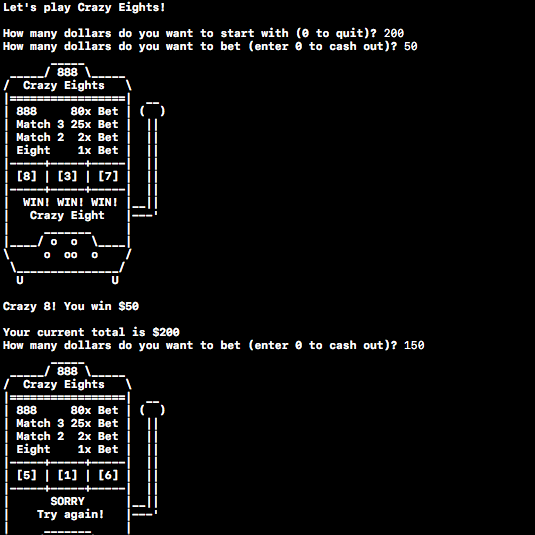

This is a project that I completed for my Computer Science I course that simulates a Crazy Eight Slot machine that is printed to the console. The program is written in C, and was a fairly fun little program to write because it allows the user to start with a certain amount at the slot machine, and either choose different amounts to bet or cash out. This was the first time that I had experienced seeding random number generators with a time variable, as before I had only worked with Java's programmer-friendly Math.random() method. The source code for this program can be found on my Github account.
© 2016 Tyler Coverstone. All Rights Reserved.